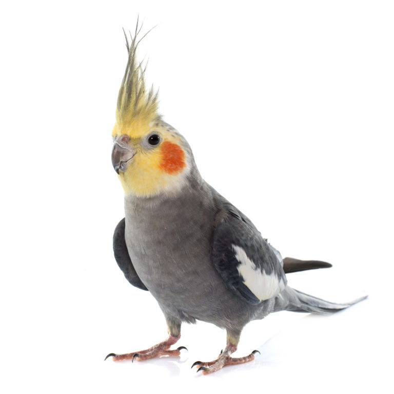
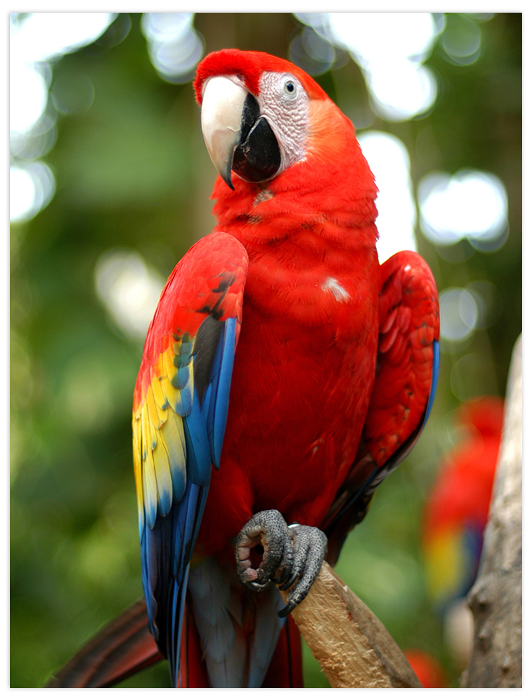

A papagájok az állatvilág legintelligensebbjei közé tartoznak. 2008-ban például egy tokiói arapapagáj tett szert hírnévre azzal, hogy fél perc alatt szétszed egy ördöglakatot. Jól fejlett hangképző képességüknek köszönhetően rendkívül sokféle hangot képesek utánozni, így az emberi beszédet is. Beszédtevékenységük azonban messze túlmutat a puszta ismétlésen: a fogékonyabb példányok több száz szót jegyeznek meg, melyek segítségével összetett kérdések megválaszolására is képesek, valamint szóbeli kéréseket, parancsokat teljesítenek, illetve fogalmaznak meg. Díszállatként minden fajból szívesen tartják őket, kétségkívül az egyik legnépszerűbb és legismertebb madárcsalád a világon. Ez színes tollazatuknak, intelligenciájuknak, játékosságuknak és az ember felé tanúsított barátságosságuknak köszönhető.
Kizárólagosan növényevők. Főleg gyümölcsön és magvakon élnek. Közismert alakú, erős csőrükkel feltörik, szétzúzzák és szétforgácsolják a magvakat, így készítve elő azokat az emésztésre. Ennek érdekében az alsó csőrkávára kampósan ráboruló felső kávát az orrnyílások mögött található ízülettel képesek koponyájuk irányába is mozgatni. Alsó csőrkávájukkal és nyelvükkel a felső káva reszelőléceire tolják, szorítják a szétzúzni kívánt magvakat.
Többségük a fák lombkoronájában élnek, de más madaraktól eltérően az ágakon nem ugrálnak, hanem kúsznak-másznak, nagyobb távolságokra repülnek. Ennek érdekében mászás közben sok faj nemcsak a lábaival, de a csőrével is kapaszkodik – általánosságban elmondható, hogy a papagájok csőrüket és lábukat nemcsak ügyesen, de összehangoltan használják.
 